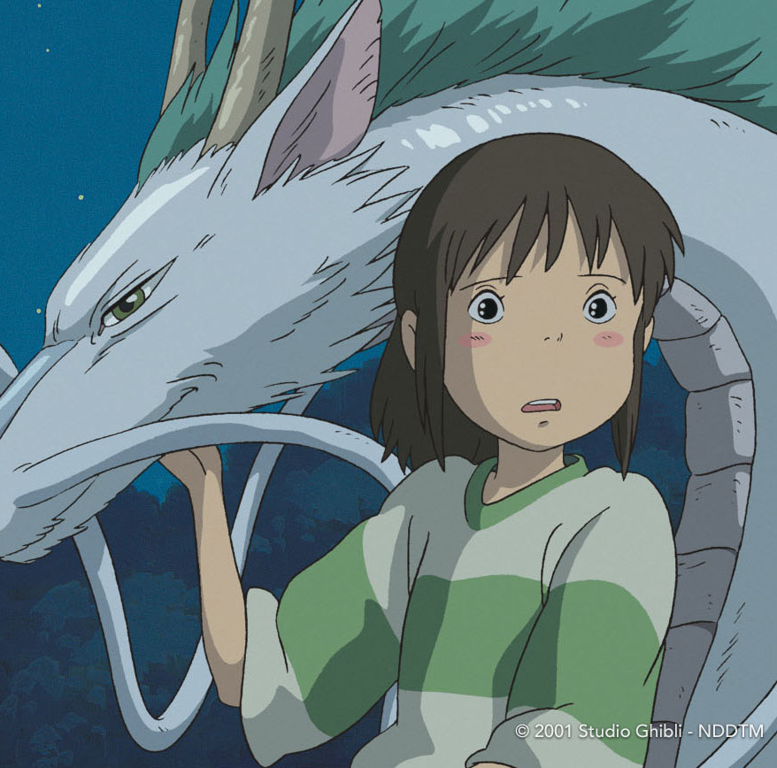

The backgrounds in Studio Ghibli are traditionally done in gouache with light washes of color easily blending together. These backgrounds contribute to the studios films overall simplistic and easy to understand messages.
 The protagonists of Studio Ghibli are typically young women going on a life changing journey that teaches them lessons about growing up. Everyone can relate to growing up and learning how to be independent, which makes Studio Ghibli movies all the more relatable.